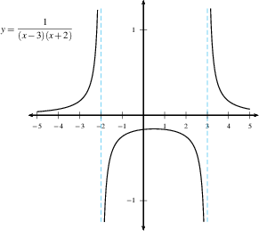
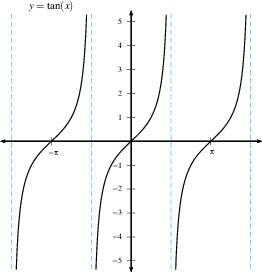
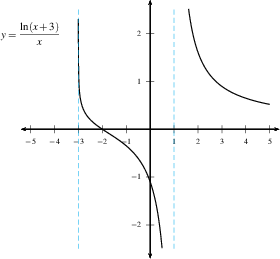
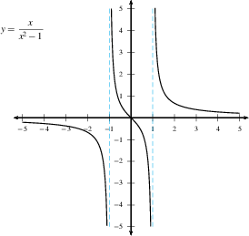

Intro to Limits
Overview: The Idea of Limits
The idea of limits underlies almost all we do in calculus.
In most previous math classes, we have learned how to get exact answers. If we want to solve \(x^2 - 5x + 6 =0\), the answer isn’t “close to 1.99” or “close to 3.01”. The quadratic formula tells us: “\(x\) is exactly 2 or exactly 3”.
In calculus, we have problems where we can’t get an exact answer directly. Instead, we find an approximate answer, then a better answer, then an even better answer. The exact answer is the limit of these approximations.
A statement of a limit is “the limit as \(x\) approaches (some \(x\) value) of the function \(f(x)\) is exactly equal to (some \(y\) value), which we write as \(\lim_{x \to \text{(some x value)}} f(x) = \text{(some y value)}.\)
For example, \(\lim_{x\to 5}(x^2-2)=23.\)
This is the most important idea in all of calculus. You will need to learn it well as you work through understanding limits.
Definition
Definition:
Suppose \(f(x)\) is defined for all \(x\) near \(a\) (possibly excluding \(a\)). \(\lim_{x \rightarrow a} f(x) = L\) (read: “the limit of \(f(x)\), as \(x\) approaches \(a\), equals \(L\)”) means that we can get \(f(x)\) as close to \(L\) as we want by making \(x\) sufficiently close to \(a\).
One-sided limits
If \(x\) is close to (but not equal) to \(a\), then \(x\) is either slightly greater or slightly less than \(a\). We can explore these cases separately. The statement \(\lim_{x \to a^+} f(x) = L\) means that whenever \(x\) is slightly greater than \(a\), \(f(x)\) is close to \(L\). In this case, we say: “the limit of \(f(x)\) as \(x\) approaches \(a\) from the right is \(L\)”.
\(\lim_{x \to a^-} f(x) = L\) means that whenever \(x\) is slightly less than \(a\), \(f(x)\) is close to \(L\). In this case, we say: “the limit of \(f(x)\) as \(x\) approaches \(a\) from the left is \(L\)”.
When limits don’t exist
For \(\displaystyle\lim_{x \to a} f(x)\) to exist and equal \(L\), we need \(f(x)\) to be approximately \(L\) on both sides of \(x=a\).
\(\lim_{x \rightarrow a}f(x)=L \qquad \Longleftrightarrow\qquad \lim_{x \rightarrow a^-}f(x)=L \text{ and } \lim_{x \rightarrow a^+}f(x)=L.\)
If the two one-sided limits are different, or if one (or both) of them fail to exist, then the overall limit doesn’t exist.
Note that the value of \(f(a)\) doesn’t enter into this, and it doesn’t matter whether \(f(a)\) is defined or not defined. Recall that when evaluating a limit of \(f\) as \(x\to a\) we only care about what happens when \(x\) is near \(a\) (when \(x\) is slightly less than \(a\), or slightly greater than \(a\)), not what happens when \(x\) is equal to \(a\).
Infinite Limits
The statement \(\lim_{x \to a} f(x) = \infty\) tells us that whenever \(x\) is close to (but not equal to) \(a\), \(f(x)\) is a large positive number. A limit with a value of \(\infty\) means that as \(x\) gets closer and closer to \(a\), \(f(x)\) gets bigger and bigger; it increases without bound. Likewise, the statement \(\lim_{x \to a} f(x) = -\infty\) tells us that whenever \(x\) is close to \(a\), \(f(x)\) is a large negative number, and as \(x\) gets closer and closer to \(a\), the value of \(f(x)\) decreases without bound.
Warning: when we say a limit \(=\infty\), technically the limit doesn’t exist. \(\displaystyle\lim_{x\to a}f(x)=L\) makes sense (technically) only if \(L\) is a number. \(\infty\) is not a number! (The word “infinity” literally means without end.) If the limit is \(+ \infty\), then the function increases without end. If the limit is \(-\infty\), it decreases without end. We say a limit is equal to \(\pm\infty\) just to indicate this increase or decrease, which is more information than we would get if we simply said the limit doesn’t exist.
Vertical Asymptotes
Definition: The line \(x=a\) is a vertical asymptote of a function \(f\) if the limit of \(f\) as \(x\to a\) from the left and/or right is \(\pm\infty\). This means at least one of the following is true: * \(\lim_{x \rightarrow a^+}f(x) = \infty\) * \(\lim_{x \rightarrow a^-}f(x) = \infty\) * \(\lim_{x \rightarrow a^+}f(x) = -\infty\) * \(\lim_{x \rightarrow a^-}f(x) = -\infty\)
Here are some examples of graphs with one or more vertical asymptotes. DO: Find all vertical asymptotes in the following graphs.




A summary
Note that if something happens as \(x \to a^+\) and the same thing happens as \(x \to a^-\), then the same also happens as \(x \to a\). Conversely, if something happens as \(x \to a\), then it also happens as \(x \to a^+\) and as \(x \to a^-\).
Here is what the limit can be (if it exists): * \(\displaystyle\lim_{x\to a} f(x) = L\) means that \(f(x)\) is close to the number \(L\) when \(x\) is near \(a\). This is the most common type of limit. * \(\displaystyle\lim_{x\to a} f(x) = \infty\) means that \(f(x)\) grows without bound as \(x\) approaches \(a\), eventually becoming bigger than any number you can name. Remember that \(\infty\) is not a number! Rather, \(\infty\) is a process of growth that never ends. * \(\displaystyle\lim_{x\to a} f(x) = -\infty\) means that as \(x\) approaches \(a\), \(f(x)\) goes extremely negative and never comes back, eventually becoming less than any number (say, minus a trillion) that you care to name.
With these ingredients we can make sense of any limit statement.
Examples: * \(\displaystyle\lim_{x \to 4^-} \tfrac{1}{4-x} = \infty\) means that whenever \(x\) is slightly less than \(4\), \(\frac{1}{4-x}\) is gigantic and positive. The graph \(y=\frac{1}{4-x}\) will shoot upwards on the left side of the vertical asymptote \(x=4\). DO: Do the work to show \(\displaystyle\lim_{x \to 4^+} \tfrac{1}{4-x} = -\infty\). What does the graph of \(y=\tfrac{1}{4-x}\) look like at \(x=4\)? What is \(\displaystyle\lim_{x \to 4} \tfrac{1}{4-x}\)? * \(\displaystyle\lim_{x \to 0} 13 (x+1) = 13\) means that \(f(x)=13(x+1)\) is close to 13 whenever \(x\) is close to 0. So \(f(0.01)\) will be close to 13, and \(f(0.000001)\) will be really close to 13. * DO: Show that \(\displaystyle\lim_{x \to 0} \tfrac1x\) does not exist.